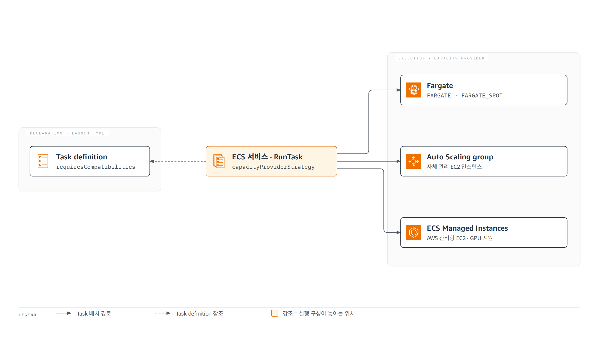
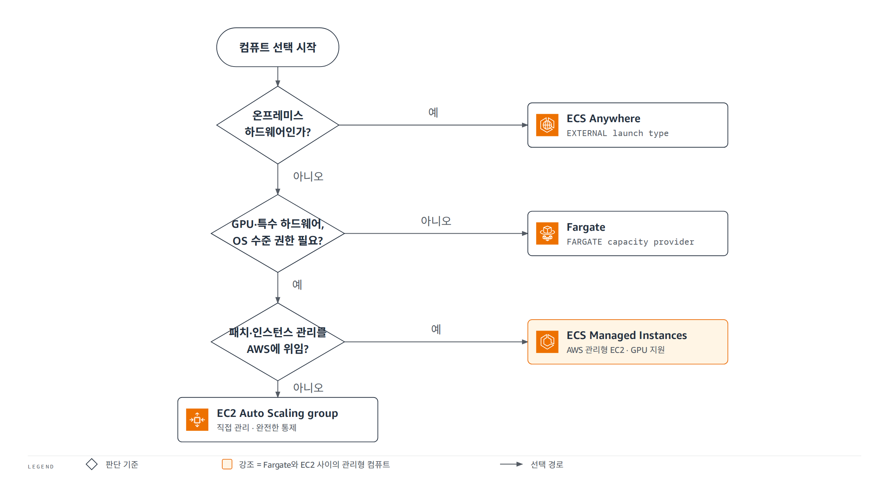
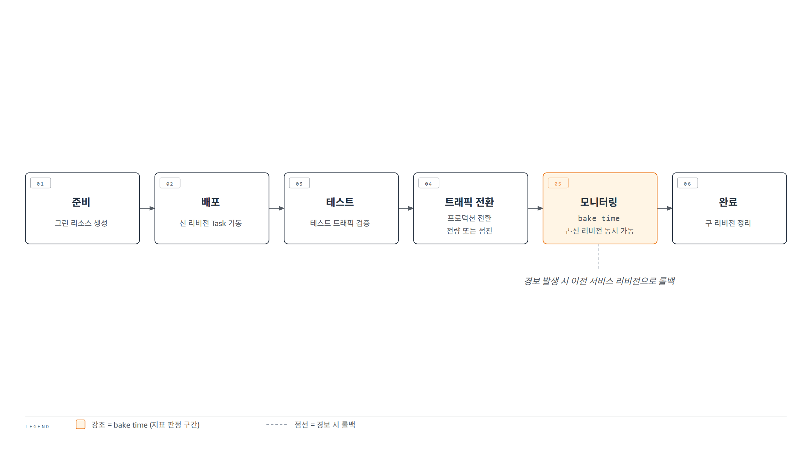
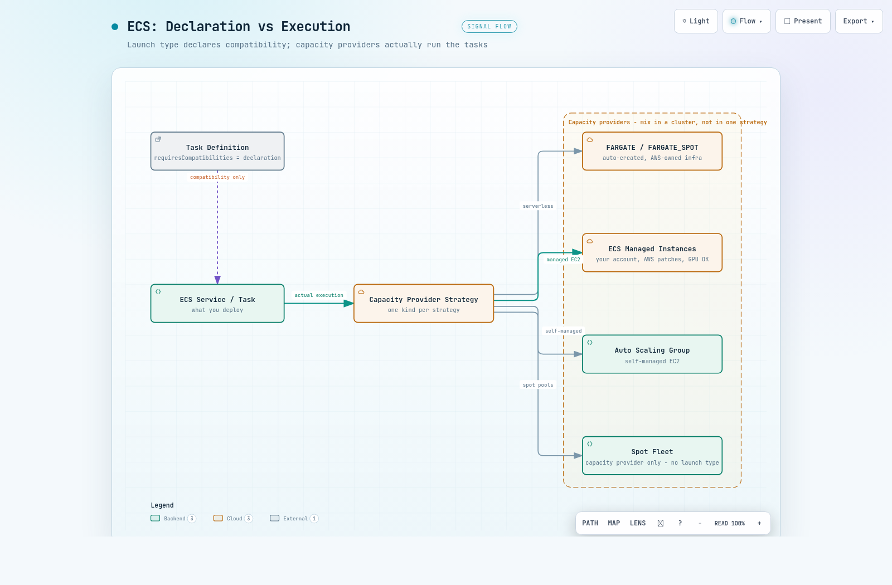

AI 시대로 전환이 빨라지면서 Amazon ECS가 다시 주목받고 있습니다. 모델 추론 서버부터 AI 에이전트와 에이전트가 호출하는 도구까지 컨테이너로 배포되는 워크로드가 늘었고, GPU 컴퓨트와 급격한 트래픽 변화를 감당하는 일이 컨테이너 운영의 일상이 되었기 때문입니다. 그런데 막상 ECS로 컨테이너 워크로드를 운영하다 보면 비슷한 고민과 마주치게 됩니다. EC2에서 제공되던 서비스를 Fargate로 이전하는데 시작 유형(launch type)이 바뀌지 않아 막히고, GPU 인스턴스는 필요하지만 OS 패치 운영까지 직접 챙기기는 부담스럽고, 어느새 6종으로 늘어난 배포 전략 가운데 무엇을 골라야 할지 판단이 서지 않습니다.
기업이 겪는 이 고민의 답은 한 가지 원칙으로 모입니다. launch type은 이제 호환되는 실행 환경을 표시하는 용도로만 남기고, 실제 실행은 용량 공급자(capacity provider)로 구성하라는 것입니다. 이 문서에서는 이 원칙이 무엇을 의미하는지에서 출발해 2026년 8월 기준 Amazon ECS의 컴퓨트와 실행 형태를 살펴보고, 배포 전략과 네트워크, 스토리지를 거쳐 상황별 선택 가이드와 설계 상한이 되는 서비스 쿼터로 묶습니다.
01가장 중요한 변화 - 선언과 실행의 분리
"ECS는 무엇으로 실행되나"에 대한 답은 이제 두 겹입니다. launch type은 태스크 정의가 어떤 실행 환경과 호환되는지 밝히는 선언이고, capacity provider는 태스크를 올릴 컴퓨트 용량을 실제로 공급하고 스케일링하는 실행 수단입니다. ECS 개발자 가이드는 launch type을 태스크 정의의 requiresCompatibilities 필드(호환되는 실행 환경을 선언하는 파라미터) 용도로만 쓰고, 실제 실행은 capacity provider로 구성하라고 권고합니다.

두 축은 1:1로 대응하지 않습니다. 표 1처럼 온프레미스용 EXTERNAL은 launch type에만 있고, 개발자 가이드가 capacity provider 전용이라고 언급하는 Spot Fleet은 launch type 목록에 없습니다. 다만 Spot Fleet 표기는 공식 문서 안에서 상충하므로 표 아래에 유보를 달았습니다.
| 컴퓨트 | launch type (선언) | capacity provider (실행) |
|---|---|---|
| Fargate | FARGATE | FARGATE / FARGATE_SPOT - ECS가 모든 클러스터에 자동 생성, 별도 생성 불필요 |
| 자체 관리 EC2 | EC2 | Auto Scaling group |
| ECS Managed Instances | MANAGED_INSTANCES | ECS Managed Instances |
| 온프레미스 (ECS Anywhere) | EXTERNAL | 없음 - launch type으로만 지정 |
| EC2 Spot Fleet | 없음 - capacity provider 전용 | Spot Fleet (표기 상충, 표 아래 참고) |
표 1의 Spot Fleet 행은 공식 문서 내 표기가 상충하므로 유보가 필요합니다. 개발자 가이드에는 "Spot Fleet은 capacity provider로만 제공된다"는 문장이 있으나, 같은 문단의 지원 열거 (FARGATE / FARGATE_SPOT / Auto Scaling group / ECS Managed Instances)에는 빠져 있고, CreateCapacityProvider API도 Auto Scaling group과 Managed Instances 두 종류의 생성만 지원합니다.
표 1의 FARGATE_SPOT은 중단 특성을 설계에 반영해야 합니다. Spot 중단 시 태스크 중지 2분 전에 경고가 오는데, EventBridge로 가는 task state change 이벤트와 실행 중인 태스크에 대한 SIGTERM 시그널 두 경로로 전달됩니다. 컨테이너가 SIGTERM을 처리하지 못하면 stopTimeout(기본 30초, Spot에서는 120초 이하 권장)이 지난 뒤 SIGKILL을 받아 데이터 유실이 생길 수 있고, 용량 부족 시 ECS는 Spot을 온디맨드로 대체하지 않고 용량이 생길 때까지 기동을 재시도합니다.
혼합 규칙은 계층에 따라 다릅니다. 하나의 클러스터에는 모든 종류의 capacity provider를 혼합해 등록할 수 있지만, 하나의 capacity provider strategy(태스크를 어느 provider에 어떤 비중으로 배치할지 정하는 규칙) 안에서는 서로 다른 종류를 섞을 수 없습니다. 클러스터 하나에 연결할 수 있는 capacity provider는 최대 20개이고, 이 값은 상향 조정이 불가능합니다.
1.1 서비스 전환 매트릭스
이 구분이 실무에서 갈리는 지점은 이미 돌아가는 서비스의 전환 가능성입니다. 표 2는 UpdateService로 바꿀 수 있는 방향과 없는 방향을 정리한 것입니다.
| 전환 방향 | 가능 여부 | 세부 |
|---|---|---|
| capacity provider → capacity provider | 가능 | 종류에 관계없이 전부 가능 |
| launch type → capacity provider | 가능 | 전부 가능 |
| launch type → launch type | 불가 | EC2 launch type에서 Fargate launch type으로 직접 전환 불가. 문서는 Fargate capacity provider 사용을 안내 |
| capacity provider → launch type | 불가 (예외 1건) | launch type으로 생성했던 서비스에 한해 capacityProviderStrategy를 빈 리스트로 넘기면 원래 launch type으로만 복귀 가능 |
launch type으로 시작한 서비스는 다른 launch type으로 바꿀 길이 없습니다. capacity provider로 옮기는 것은 언제든 가능하지만, 반대 방향은 launch type으로 생성했던 서비스가 UpdateService에 빈 capacityProviderStrategy를 넘겨 원래 값으로 복귀하는 한 가지 경로뿐입니다.
즉 launch type 사이의 이동이 필요해 보이는 상황(예: EC2에서 Fargate로)의 실제 해법은 launch type 전환이 아니라 Fargate capacity provider로의 전환입니다. 실행을 capacity provider로 구성해 두면 이후 어떤 capacity provider로든 옮길 수 있으므로, 신규 서비스는 처음부터 capacity provider로 만드는 것이 AWS 권고이자 안전한 기본값입니다.
02ECS Managed Instances - Fargate와 EC2 사이
ECS의 컴퓨트 선택은 오랫동안 양자택일이었습니다. 인프라를 전부 맡기는 대신 인스턴스 선택권이 없는 Fargate, 선택권을 갖는 대신 OS 패치까지 떠안는 EC2 두 갈래여서, GPU는 필요하지만 패치는 맡기고 싶은 팀이 설 자리가 없었습니다. ECS Managed Instances는 이 빈칸을 채우는 세 번째 관리형 컴퓨트입니다.
인스턴스는 고객 계정에 생성되지만 소프트웨어와 OS 패치, 인스턴스 스케일링, 유지보수는 AWS가 담당합니다. 동시에 EC2 전체 기능에 접근할 수 있어 인스턴스 타입 선택과 GPU 사용이 가능합니다. 표 3은 컴퓨트 4종의 책임 분담과 과금 구조를 비교한 것입니다.
| 컴퓨트 | 인프라 소유 | OS/패치 책임 | 인스턴스 타입 선택 | GPU, 특수 하드웨어 | 과금 |
|---|---|---|---|---|---|
| Fargate | AWS | AWS | 불가 (vCPU/메모리만 지정) | 불가 | 태스크가 요청한 vCPU/메모리/스토리지 기준, 초 단위 (최소 1분) |
| ECS Managed Instances | 고객 계정 | AWS | 가능 (속성 기반 선택) | 가능 | EC2 인스턴스 요금 + 인스턴스 타입별 관리 요금, 초 단위 (최소 1분) |
| EC2 (Auto Scaling group) | 고객 | 고객 | 가능 | 가능 | EC2 등 하부 리소스 요금만 (ECS 오케스트레이션 무료) |
| External (온프레미스)* | 고객 (온프레미스) | 고객 | 해당 없음 | 가능 | 등록 인스턴스당 $0.01025/시간 (최소 1시간) |
* External(ECS Anywhere)은 ELB 로드밸런싱과 awsvpc 모드 등이 지원되지 않는 기능 제약을 전제로 선택해야 합니다. 제약 목록은 6.3절에서 다룹니다.
표 3에서 Fargate의 "vCPU/메모리만 지정"도 자유 조합이 아닙니다. 0.25 vCPU에서 32 vCPU까지 CPU 티어별로 허용 메모리 대역이 고정된 이산 조합만 유효하고(예: 0.25 vCPU는 512 MiB / 1 GB / 2 GB 3가지), 조합을 벗어난 값은 RegisterTaskDefinition 단계에서 에러로 거부됩니다.
Managed Instances의 과금은 두 갈래입니다. 표준 EC2 인스턴스 요금에 인스턴스 타입별로 다른 per-instance 관리 요금이 더해지고, 두 요금 모두 초 단위로 계산되며 최소 1분이 적용됩니다. 관리 요금은 EC2 구매 옵션과 독립적이어서 Savings Plans, 예약 인스턴스, Spot 할인은 EC2 요금 쪽에만 적용됩니다.
2.1 언제 선택하나 - 문서가 제시하는 기준 5가지
ECS 개발자 가이드는 Managed Instances를 선택할 상황을 다섯 가지로 제시합니다.
- Fargate에 없는 가속 컴퓨트, 특정 CPU 명령어 집합, 고성능 네트워크, 대용량 메모리가 필요한 워크로드
- NVIDIA 또는 AMD GPU 워크로드
- Capacity Reservation(EC2 용량 사전 예약)이 필요한 미션 크리티컬 워크로드
- eBPF(Linux 커널 안에서 검증된 프로그램을 실행하는 기술) 기반 모니터링처럼 OS 특권 접근이 필요한 보안/관측 도구
- 대형 인스턴스에 여러 태스크를 배치해 활용률을 끌어올리는 비용 최적화
이미 Fargate에서 운영 중이라면 Managed Instances 마이그레이션 가이드를 참고해 기존 워크로드를 옮길 수 있습니다.
2.2 운영 파라미터 - launch template, 용량, 모니터링, 태그
Managed Instances에서는 ECS가 launch template(EC2 인스턴스 시작 설정을 담는 템플릿)을 직접 생성합니다. 이 템플릿으로 인스턴스 프로파일, 네트워크, 스토리지, 용량 옵션, 인스턴스 요건을 관리합니다. 표 3의 "속성 기반 선택"은 인스턴스 타입을 하나씩 고르는 대신 vCPU 수와 메모리 크기 범위(필수), 가속기 요건(선택) 같은 속성을 정의하면 ECS가 부합하는 타입을 자동 선택하는 방식이며, 특정 타입 지정은 특수 하드웨어가 필요한 워크로드로 한정하라는 것이 문서 권고입니다.
- 용량 옵션 3종 - On-Demand / Spot / Capacity Reservation
- 모니터링 2종 - 기본(대부분 지표 5분 간격, 상태 확인은 1분, 무료) / 상세(전 지표 1분 간격)
- tag propagation을 CAPACITY_PROVIDER로 켜면 관리형 인스턴스, 컨테이너 인스턴스, launch template, 볼륨, ENI가 동일한 태그를 공유합니다
2.3 Managed daemons - 에이전트의 중앙 관리
2026-04-01에 발표된 Managed daemons는 모니터링, 로깅, 추적 에이전트를 플랫폼 팀이 중앙에서 관리하는 구성체입니다. 애플리케이션 팀과 조정 없이 독립적으로 배포하고 업데이트할 수 있으며, ECS Managed Instances capacity provider 전용입니다. 서비스의 schedulingStrategy: DAEMON(3.2절)과는 이름만 비슷할 뿐 별개 기능입니다.
데몬 프로세스는 인스턴스당 정확히 1개 실행됩니다. 애플리케이션 태스크보다 먼저 시작되고 마지막에 종료되어 관측 연속성을 보장합니다. 별도의 daemon task definition으로 관리하고 롤링 방식으로 자동 업데이트하며, 기능 자체는 추가 요금 없이 데몬 태스크의 컴퓨트 리소스만 과금됩니다.
2.4 ECS 밖으로 - AWS Batch 지원
2026-08-25부터 AWS Batch가 ECS Managed Instances를 신규 컴퓨트 옵션으로 지원합니다. GPU 가속과 컴퓨트 집약 배치 워크로드를 실행하면서 AMI 업데이트, 보안 패치, 인스턴스 라이프사이클은 AWS가 자동 처리합니다.
시작 경로는 Batch 콘솔 또는 CreateComputeEnvironment API이고, 용량 옵션은 On-Demand / Spot / Reserved Instances입니다.
컴퓨트 선택을 판단 순서로 정리하면 그림 2와 같습니다.

03서비스와 태스크 실행 형태
컴퓨트를 정했으면 다음 질문은 태스크를 어떤 형태로 돌릴 것인가입니다. 선택지는 가장 빠르게 시작하는 Express Mode, 표준 장기 실행인 서비스, 단발 실행인 RunTask, 정기 실행인 예약 태스크 네 가지입니다. 그림 3은 네 형태의 선택 분기입니다.
이미지 + 역할 2개로 자동 구성"] Q -->|"표준 장기 실행"| S["서비스
REPLICA / DAEMON"] Q -->|"단발 작업"| R["RunTask
독립 태스크"] Q -->|"정기 실행"| V["EventBridge Scheduler 예약
rate / cron"]
3.1 Express Mode - 입력 3개로 서비스 완성
Express Mode는 컨테이너 이미지, 태스크 실행 역할, 인프라 역할 3개만 주면 나머지를 ECS가 자동 구성하는 실행 형태입니다. Fargate 서비스, 고유 접근 URL, SSL/TLS 로드밸런서, 오토스케일링, 모니터링, 네트워킹이 한 번에 만들어지고, 퍼블릭과 프라이빗 HTTPS를 모두 지원합니다.
비용 구조는 단순합니다. Express Mode 자체는 추가 요금이 없고 생성된 하위 리소스만 과금되며, 동일한 네트워킹 구성의 Express 서비스끼리는 ALB를 공유해 비용을 줄입니다.
제약은 줄고 있습니다. 2026-07-01부터 커스텀 태스크 정의를 지원해 보안 사이드카, 헬스 체크, Linux 런타임 설정, FireLens 로그 라우팅 같은 태스크 수준 커스터마이징과 기존 CI/CD, IaC의 태스크 정의를 그대로 재사용할 수 있습니다. 생성된 리소스가 모두 고객 계정에 있으므로 언제든 직접 관리로 전환할 수 있습니다. 태스크 정의 하나에 담을 수 있는 컨테이너 정의는 10개이고 이 값은 상향 조정이 불가능하므로, 보안 사이드카를 여러 개 붙이거나 프록시 컨테이너가 주입되는 Service Connect 구성(5.2절)처럼 태스크 안 컨테이너가 늘어나는 설계는 이 상한을 염두에 두어야 합니다.
3.2 표준 서비스 - REPLICA와 DAEMON
서비스의 schedulingStrategy 유효값은 REPLICA와 DAEMON 2종이고 기본값은 REPLICA입니다. REPLICA는 원하는 수의 태스크를 클러스터에 유지하며 기본적으로 가용 영역에 분산 배치합니다. DAEMON은 배치 제약을 충족하는 활성 컨테이너 인스턴스마다 태스크를 정확히 1개씩 배포하므로 desiredCount와 오토스케일링 설정이 필요 없습니다.
DAEMON의 제약은 컴퓨트와 배포 컨트롤러 양쪽에 걸립니다. 개발자 가이드는 Fargate 태스크뿐 아니라 CODE_DEPLOY, EXTERNAL 배포 컨트롤러를 쓰는 태스크도 DAEMON 전략을 지원하지 않는다고 명시합니다. 컴퓨트가 EC2 계열이어도 CodeDeploy Blue/Green 파이프라인을 유지하는 서비스라면 DAEMON을 만들 수 없습니다.
3.3 단발과 정기 - RunTask와 EventBridge Scheduler
상시 유지가 필요 없는 작업은 서비스 없이 태스크를 직접 실행합니다. 큐에 작업이 들어올 때 프로세스가 RunTask를 호출하는 단발 실행이 대표적입니다. RunTask API 호출 한 번으로 기동할 수 있는 태스크는 최대 10개이고 이 값은 상향 조정이 불가능하므로, 그 이상은 호출을 나누어 실행합니다.
정기 실행은 EventBridge Scheduler(일정 기반으로 태스크를 기동하는 스케줄링 서비스)가 담당합니다. 고정 간격(rate) 또는 cron 표현식으로 지정한 시각에 클러스터의 태스크를 하나 이상 실행합니다. 현행 문서가 범용 EventBridge 규칙이 아니라 EventBridge Scheduler를 명시하므로, 신규 구성은 Scheduler 기준으로 잡는 것이 정확합니다.
04배포 전략 6종
새 리비전을 내보내는 방법은 Rolling / CodeDeploy Blue/Green / External 3종에서 6종으로 늘었습니다. 공식 문서의 구조는 배포 컨트롤러 3종(ECS / CodeDeploy / External)이고, 이 중 ECS 컨트롤러가 ROLLING / BLUE_GREEN / LINEAR / CANARY 4개 전략을 품습니다. 합산하면 6가지 방식이고 기본값은 Rolling입니다.
표 4는 6종 각각의 전환 방식과 로드밸런서 요구, 적합한 상황을 정리한 것입니다.
| 전략 | 컨트롤러 | 전환 방식 | 로드밸런서 요구 | 적합 상황 |
|---|---|---|---|---|
| Rolling | ECS | 태스크 점진 교체. minimumHealthyPercent 하한과 maximumPercent 상한으로 속도 제어 | 불필요 | 점진적 트래픽 제어가 불필요한 대부분의 서비스. 기본값이며 로드밸런서를 요구하지 않는 전략 |
| Blue/Green (내장) | ECS | 그린 환경을 테스트 트래픽으로 선검증 후 프로덕션 트래픽 전량 즉시 전환 | ALB/NLB 또는 Service Connect | 즉시 전환과 신속 롤백이 필요한 서비스 |
| Linear | ECS | 동일 비율 증분으로 점진 전환. step 3.0~100.0%, step bake 0~1,440분 | ALB/NLB 또는 Service Connect | 트래픽을 조금씩 옮기며 지표를 확인해야 하는 서비스 |
| Canary | ECS | 2단계 전환 - 소량 트래픽 선검증 후 나머지 일괄 전환 | ALB/NLB 또는 Service Connect | 신버전을 소량 트래픽으로 먼저 검증하고 싶은 서비스 |
| Blue/Green (CodeDeploy) | CODE_DEPLOY | CodeDeploy 사전 정의 구성으로 canary / linear / all-at-once 전환 | ALB/NLB 필수, NLB는 all-at-once만 | 기존 CodeDeploy 파이프라인을 유지해야 하는 팀 |
| External | EXTERNAL | 서드파티 컨트롤러가 task set의 scale 값으로 직접 제어 | 선택. 쓰면 ALB/NLB만 | 자체 배포 도구를 가진 조직 |
선택 기준에 대한 AWS의 입장은 명확합니다. CodeDeploy Blue/Green 배포 문서는 제목 바로 아래 첫 문단에서 내장 Blue/Green 사용을 권장한다고 명시합니다. CodeDeploy 방식은 기존 파이프라인 유지가 필요한 경우의 선택지로 남습니다.
4.1 내장 고급 배포의 공통 구조 - 6단계와 bake time
내장 Blue/Green, Linear, Canary는 CodeDeploy 없이 ECS 컨트롤러가 직접 수행하며, 준비 → 배포 → 테스트 → 트래픽 전환 → 모니터링 → 완료의 공통 6단계(phase) 구조를 공유합니다. 세부적으로는 11개 lifecycle stage로 나뉘고, 스테이지에는 두 종류의 훅(hook)을 걸 수 있습니다. 검증 로직을 자동 실행하는 Lambda 훅에 더해, 일시 정지(pause) 훅은 ContinueServiceDeployment API로 계속 진행이나 롤백을 지시할 때까지 배포를 멈춥니다. 수동 승인 게이트가 필요한 팀에게는 이쪽이 직접적인 수단으로, 타임아웃(기본 24시간, 최대 14일)이 만료되면 지정한 동작을 수행하며 기본값은 롤백입니다. bake time(트래픽 전환 후 구 리비전과 신 리비전을 동시에 가동하며 지표를 지켜보는 구간)이 끝나야 구 환경이 정리됩니다.

역할 구분이 중요합니다. 내장 Blue/Green의 프로덕션 전환은 전량 즉시(all-at-once)이고, 점진 전환이 필요하면 Linear 또는 Canary를 선택해야 합니다. 세 전략 모두 2026-07-21부터 AWS European Sovereign Cloud에서도 제공됩니다.
4.2 Rolling의 세부 규칙
Rolling은 desiredCount 대비 백분율 2개로 교체 속도를 제어합니다. minimumHealthyPercent는 정상 태스크 수의 하한으로 올림 계산하고, maximumPercent는 상한으로 내림 계산합니다. 예를 들어 min 75%에 desired 2면 올림 결과가 2라서 어떤 태스크도 중지할 수 없습니다.
배포 중 비정상이 된 태스크는 자신이 속한 것과 동일한 서비스 리비전으로 교체됩니다. 실패 감지는 태스크 기동 실패를 잡는 deployment circuit breaker와 애플리케이션 지표를 보는 CloudWatch alarms 2종을 병용할 수 있고, 둘 다 이전 서비스 리비전으로의 롤백을 지원합니다.
4.3 2026년의 관측성과 스케일링 개선
전략 확장과 함께 배포 관측성도 개선되었습니다. 2026-07-01부터 ECS 콘솔 서비스의 Deployments 탭에서 라이브 배포 타임라인, 서킷 브레이커 상태, 태스크 실패 실시간 추적, 실패 태스크에서 CloudTrail로 이어지는 딥링크를 제공합니다.
2026-07-21에 발표된 Action Logs는 서비스 배포와 Managed daemon 업데이트 중 ECS가 고객 대신 수행한 동작을 타임스탬프 기록으로 남깁니다. 이벤트 이름, 로그 레벨(INFO/WARN/ERROR), 리소스 ARN, 상태 이유가 담기며, CloudWatch Logs / S3 / Kinesis Data Firehose로 전송하고 Amazon Q 통합으로 배포 문제의 근본 원인 분석을 지원합니다.
실시간 배포 관측성은 Rolling 배포 유형 서비스만 해당하고, Blue/Green 등 다른 전략은 이번 발표 범위가 아닙니다. Action Logs는 클러스터 레벨 옵트인이며, 전송 대상 (CloudWatch Logs / S3 / Firehose)의 표준 요금이 적용됩니다.
배포와 별개로 서비스 오토스케일링 속도도 2026-06-18에 개선되었습니다. scale-out 트리거까지 걸리는 시간이 363초에서 86초로 76% 줄었고, 신규 태스크 프로비저닝을 포함한 전체 스케일 시간은 386초에서 109초로 72% 줄었습니다. 20초 간격 고해상도 메트릭 기반이고 Fargate / ECS Managed Instances / EC2 모두 대상이며, 고해상도 메트릭에는 표준 CloudWatch 요금이 적용됩니다.
다만 이 개선이 태스크 기동 속도의 상한까지 올려주지는 않습니다. ECS 스케줄러가 서비스당 1분에 프로비저닝할 수 있는 태스크 수는 Fargate 기준 주요 리전 500개, 그 외 리전(2025-05-20 이후 신설 리전 포함) 125개이며 이 쿼터는 상향 조정이 불가능합니다. EC2와 External 인스턴스도 서비스당 분당 500개입니다. 계정 레벨에서는 Fargate On-Demand 기동 속도가 지속(sustained) 초당 20개, 버스트 100개로 별도 제한됩니다(주요 리전 기본값, 상향 요청 가능). 수백 태스크 규모의 대량 스케일아웃에서는 메트릭 반응 속도보다 이 기동 상한이 먼저 걸립니다.
05네트워크 형태
태스크가 네트워크에 붙는 방식은 태스크 정의의 network mode(컨테이너의 네트워크 연결 방식을 정하는 파라미터)가 정합니다. 모드는 5종이지만 OS에 따라 쓸 수 있는 조합이 갈립니다. 표 5는 EC2 기준 모드별 지원 OS와 특징을 정리한 것입니다.
| 모드 | Linux on EC2 | Windows on EC2 | 특징 |
|---|---|---|---|
| awsvpc | 가능 | 가능 | 태스크가 전용 ENI와 사설 IP를 받습니다. 권장 모드 |
| bridge | 가능 | 불가 | Docker bridge 드라이버 사용. Linux 기본값 |
| host | 가능 | 불가 | 호스트 ENI에 포트 직결. 동적 포트 매핑 불가, hostPort 명시 필수. 같은 태스크 정의를 한 인스턴스에서 여러 개 실행 불가 |
| none | 가능 | 불가 | 외부 네트워크 연결 없음 |
| default | 불가 | 가능 | Docker nat 드라이버 사용. Windows 기본값 |
Fargate에는 선택지가 없습니다. 서비스 정의 문서는 Fargate 사용 시 awsvpc 모드가 필수라고 명시합니다. awsvpc 모드의 태스크는 EC2 인스턴스가 아니라 자기 ENI에 연결되므로, 로드밸런서 타겟 그룹도 ip 타입을 사용합니다.
5.1 IP 버전 - IPv6-only의 전제 조건
태스크 네트워킹은 IPv4, 듀얼스택, IPv6-only 세 가지 IP 구성을 지원합니다. IPv6-only는 서울 리전에서도 지원되지만, 세 구성 중 전제 조건 목록이 가장 깁니다.
- 듀얼스택 로드밸런서와 IPv6 타겟 그룹 필수
- Windows 미지원. ECS 최적화 Linux AMI와 컨테이너 에이전트 1.99.1 이상 필수
- 인스턴스 기동 시 --enable-primary-ipv6 필수. 누락하면 host/bridge 모드 태스크가 로드밸런서와 Cloud Map에 등록되지 않습니다
- IPv4 엔드포인트와 통신하려면 DNS64/NAT64 필요. ECR은 듀얼스택 URI 사용
- ECS Exec 미지원
5.2 서비스 간 연결 - Service Connect, Cloud Map, 로드밸런서
서비스 사이를 잇는 공식 옵션은 Service Connect, Service discovery(Cloud Map 기반 DNS), VPC Lattice 3종이고, 별도로 ALB/NLB 로드밸런싱을 씁니다. Service Connect는 서비스 디스커버리와 서비스 메시를 ECS 구성만으로 함께 제공하는 기능입니다. 태스크마다 프록시 컨테이너를 주입해 짧은 이름(short name)과 표준 포트로 서비스 간 통신을 처리하고, 기능 자체는 추가 요금이 없습니다. 다만 프록시는 태스크 안에서 실행되어 태스크의 vCPU와 메모리를 워크로드와 나눠 쓰므로, 요금이 없다는 것과 리소스를 쓰지 않는다는 것은 별개입니다.
서비스 메시 계획에는 마감일이 하나 걸려 있습니다. App Mesh는 2026-09-30에 지원이 종료되므로 신규 아키텍처에서 제외해야 하고, ECS의 서비스 메시 경로는 Service Connect 또는 VPC Lattice로 수렴합니다. 전환 실무는 App Mesh에서 VPC Lattice로 전환한 실측 기록 게시물에서 측정값 기준으로 다뤘습니다.
Service Connect로의 전환은 설정 변경이 아니라 서비스 재생성 이벤트입니다. 하나의 ECS 서비스는 App Mesh의 mesh와 Service Connect namespace에 동시에 속할 수 없어 서비스를 다시 만들어야 하고, 무중단이 필요하면 서비스 복제본을 만들어 트래픽을 점진 이전하는 blue/green 방식이 AWS 공식 권고입니다.
namespace에는 정원도 있습니다. 하나의 namespace에서 실행할 수 있는 서비스는 300개이고 이 값은 상향 조정이 불가능합니다. 서비스가 많은 App Mesh 메시를 옮길 때는 mesh 하나를 namespace 하나로 그대로 옮기지 말고, 도메인 단위로 namespace를 나누는 분할 설계를 먼저 검토해야 합니다. Service discovery 쪽에도 별도 상한이 있습니다. service discovery를 구성한 서비스는 Cloud Map의 서비스당 인스턴스 쿼터 때문에 서비스당 태스크가 1,000개로 제한됩니다(6.4절 표 7 각주 참조).
06스토리지, 플랫폼 축과 선택 가이드
남은 축은 데이터를 어디에 두는가와 플랫폼 세부 옵션입니다. 이 절에서 스토리지와 플랫폼 축을 정리하고, 표 6의 상황별 선택 가이드로 문서 전체를 묶습니다.
6.1 스토리지 - 임시에서 지속까지
태스크는 기본으로 임시 스토리지를 받고, 지속성이 필요하면 볼륨을 연결합니다. 개발자 가이드의 데이터 볼륨 옵션 가운데 다섯 갈래가 중심입니다.
- Amazon EBS - 태스크당 볼륨을 자동 프로비저닝합니다. 지속성은 실행 형태에 따라 달라져서, 서비스가 관리하는 태스크에서는 태스크 종료와 함께 삭제되는 임시 볼륨이지만 단독 실행(standalone) 태스크에서는 볼륨을 유지할 수 있습니다. Fargate / EC2 / Managed Instances 3종 컴퓨트를 모두 지원하고, 2026-05-18부터 AWS GovCloud (US) 리전으로 확장되었습니다
- Amazon EFS - Linux 태스크용 지속 공유 스토리지. Fargate / EC2 / Managed Instances 지원
- FSx for Windows File Server - Windows 태스크용 지속 스토리지. EC2 전용
- Docker volume - Linux / Windows 지속 볼륨. EC2 전용
- bind mount - 컨테이너 수명에 묶이는 임시(ephemeral) 볼륨. Fargate에서는 호스트 경로 마운트가 아니라 태스크에 할당된 임시 스토리지(기본 20 GiB, 최대 200 GiB)를 태스크 안 컨테이너끼리 공유하는 용도이고, 호스트 경로를 지정하는 host / sourcePath는 EC2 호스팅 태스크 전용입니다. Fargate / EC2 / Managed Instances 지원
현행 공식 문서의 볼륨 옵션 표에는 FSx for NetApp ONTAP과 Amazon S3 Files까지 총 7종이 올라 있습니다. Amazon S3 Files는 S3 데이터를 파일 시스템 인터페이스로 빠르게 캐시 접근하는 지속 볼륨으로, Fargate와 Managed Instances의 Linux 태스크를 지원합니다. 볼륨마다 지원 컴퓨트가 다르므로, FSx for Windows File Server와 Docker volume이 EC2 전용이라는 점을 포함해 공식 표에서 조합을 확인하고 설계하는 것이 안전합니다.
6.2 플랫폼 축 - OS, 아키텍처, GPU, 운영 도구
컴퓨트와 스토리지 바깥에도 선택을 좌우하는 축이 여섯 개 있습니다.
- OS와 아키텍처 - Linux / Windows, x86_64 / ARM64(Graviton). ARM64는 Linux 전용이고 Fargate에서는 platform version 1.4.0 이상이 필요합니다
- GPU - NVIDIA / AMD. Fargate는 GPU 미지원이므로 Managed Instances 또는 EC2에서 씁니다
- Fargate platform version - 커널과 컨테이너 런타임 버전의 조합. 미지정 시 LATEST가 기본값이고, 새 태스크는 항상 해당 버전의 최신 revision에서 기동합니다
- ECS Exec - 실행 중인 컨테이너에 셸로 접근하는 디버깅 도구. IPv6-only 구성에서는 미지원
- 태스크 배치 - EC2는 placement strategy(binpack / random / spread)와 constraint를 모두 지원하고, Managed Instances는 strategy 없이 constraint만 지원하되 빌트인 attribute 가운데 ecs.subnet-id / ecs.availability-zone / ecs.instance-type / ecs.cpu-architecture 4종 subset만 허용하며, Fargate는 둘 다 지원하지 않습니다. Managed Instances와 Fargate의 가용 영역 분산은 플랫폼이 알아서 수행합니다
- 스케일링 2층 - 태스크 수는 서비스 오토스케일링 (target tracking / step / scheduled / predictive 4종)이, 태스크를 올릴 용량은 capacity provider의 클러스터 오토스케일링이 담당합니다. 이 가운데 predictive scaling은 서비스 수준 기능으로, 하부 컴퓨트(EC2, Fargate) 용량의 스케일링과 독립적으로 서비스의 태스크 층만 스케일합니다
스케일링 2층 가운데 용량 층을 EC2 Auto Scaling group capacity provider로 운영할 때의 관리 노브는 세 가지입니다. managed scaling을 켜면 ECS가 CapacityProviderReservation 메트릭과 target tracking 정책을 만들어 인스턴스의 scale-in/out을 대신 관리합니다. target capacity(유효 범위 1~100%)를 100 미만으로 두면 그만큼 여유 용량을 상시 확보해 후속 태스크 기동이 빨라지고, managed termination protection은 태스크가 실행 중인 인스턴스가 scale-in으로 종료되지 않게 보호합니다(ASG의 instance scale-in protection 활성화가 전제 조건).
6.3 상황별 선택 가이드
표 6은 이 문서의 축들을 상황별 권장 조합으로 요약한 것입니다.
| 상황 | 권장 선택 |
|---|---|
| 웹 서비스를 가장 빠르게 올리고 싶다 | Express Mode - 입력 3개로 자동 구성, 이후 직접 관리로 전환 가능 |
| 인프라 운영을 최소화한 표준 서비스 | Fargate capacity provider |
| GPU나 특수 하드웨어는 필요하지만 패치는 맡기고 싶다 | ECS Managed Instances capacity provider |
| OS와 인스턴스를 완전히 통제해야 한다 | EC2 Auto Scaling group capacity provider |
| 온프레미스 하드웨어를 그대로 쓴다 | EXTERNAL launch type (ECS Anywhere) |
| 단발 배치 작업 / 정기 실행 | RunTask / EventBridge Scheduler 예약 태스크 |
| 점진적 트래픽 제어가 필요 없는 대부분의 서비스, 로드밸런서 없는 서비스 | Rolling - 기본값이며 로드밸런서를 요구하지 않는 전략 |
| 신버전을 검증하며 트래픽을 옮기고 싶다 | 점진 전환은 Linear 또는 Canary, 선검증 후 즉시 전환은 내장 Blue/Green |
| 서비스 메시가 필요하다 | Service Connect 또는 VPC Lattice. App Mesh는 2026-09-30 지원 종료로 제외 |
표 6의 EXTERNAL(ECS Anywhere)은 기능 제약을 전제로 선택해야 합니다. ELB 로드밸런싱, service discovery, awsvpc 네트워크 모드, capacity provider, EFS 볼륨이 지원되지 않으므로, 공식 문서도 인바운드 트래픽을 받는 웹 서비스류 워크로드에는 비효율적이라고 명시합니다.
6.4 설계 상한 - 핵심 서비스 쿼터
마지막 축은 설계 상한이 되는 서비스 쿼터입니다. 표 7은 리전별 기본값 기준의 대표 수치입니다.
| 쿼터 | 기본값 | 상향 조정 |
|---|---|---|
| 계정당 클러스터 수 | 10,000 | 가능 |
| 클러스터당 서비스 수 | 5,000 | 불가 |
| 서비스당 태스크 수 (desired count) | 5,000 | 불가 |
| 클러스터당 컨테이너 인스턴스 수 | 5,000 | 불가 |
| task definition family당 revision 수 | 1,000,000 | 불가 |
| Fargate On-Demand vCPU 수 | 6 (Spot은 별도 6) | 가능 |
표 7의 기본값은 AWS가 설정한 초기 쿼터이며, 계정에 실제 적용된 값(applied quota)이나 요청 가능한 최대값과는 별개입니다. 또한 service discovery를 구성한 서비스는 Cloud Map의 서비스당 인스턴스 쿼터 때문에 서비스당 태스크가 1,000개로 제한되어, 표의 서비스당 태스크 수 5,000보다 먼저 걸립니다.
두 가지 함정이 있습니다. task definition revision은 등록 해제하거나 삭제해도 1,000,000 한도 계산에서 빠지지 않습니다. Fargate 쿼터는 태스크 수가 아니라 vCPU 개수 기준이고, On-Demand vCPU 초기값은 6에 불과합니다(Spot은 별도로 6). 1 vCPU 태스크 기준 동시 6개면 한도에 닿는 수준이므로, 신규 계정에서는 첫 부하 테스트나 본 배포 전에 상향을 신청해 두어야 합니다. 이 값은 상향 요청이 가능하고, Fargate가 리전별 사용량을 관찰해 자동으로 올리기도 합니다.
글머리의 세 가지 고민으로 돌아가 보겠습니다. EC2에서 Fargate로 이전하고 싶다면 launch type을 바꾸는 대신 Fargate capacity provider로 전환하는 것이 답이고, 애초에 신규 서비스를 capacity provider로 만들어 두면 이 고민 자체가 생기지 않습니다. GPU는 필요한데 패치는 맡기고 싶다면 Fargate와 EC2 사이에 자리 잡은 ECS Managed Instances가 그 공백을 채웁니다. 무엇으로 배포할 것인가는 점진적 트래픽 제어가 필요 없으면 기본값인 Rolling, 소량 검증 후 점진적인 전환이면 Linear나 Canary, 선검증 후 즉시 전환이면 내장 Blue/Green을 고르면 됩니다.
결론: 한 문장으로 요약하면, 선언은 태스크 정의의 requiresCompatibilities에 맡기고 실행은 capacity provider로 구성하며, 컴퓨트는 Fargate / Managed Instances / EC2의 책임 분담에서 고르고, 배포는 6종 전략 중 트래픽 전환 요구에 맞는 것을 선택하는 것이 2026-08 기준 ECS의 기본기입니다.

--참고 자료
핵심 출처 (본문 1차 확인)
- launch type과 capacity provider 비교 - Amazon ECS Developer Guide (2026-08-26 열람) https://docs.aws.amazon.com/AmazonECS/latest/developerguide/capacity-launch-type-comparison.html
- ECS Managed Instances capacity provider 개념 - Amazon ECS Developer Guide (2026-08-26 열람) https://docs.aws.amazon.com/AmazonECS/latest/developerguide/managed-instances-capacity-providers-concept.html
- Amazon ECS Express Mode 개요 - Amazon ECS Developer Guide (2026-08-26 열람) https://docs.aws.amazon.com/AmazonECS/latest/developerguide/express-service-overview.html
- Task networking - 네트워크 모드와 IP 버전 - Amazon ECS Developer Guide (2026-08-26 열람) https://docs.aws.amazon.com/AmazonECS/latest/developerguide/task-networking.html
공식 문서와 발표
- Amazon ECS service deployment controllers and strategies - 배포 컨트롤러 3종과 ECS 컨트롤러의 전략 4종 https://docs.aws.amazon.com/AmazonECS/latest/developerguide/ecs_service-options.html
- 내장 Blue/Green 배포의 동작 방식 - 공통 6단계와 lifecycle stage 11종 https://docs.aws.amazon.com/AmazonECS/latest/developerguide/blue-green-deployment-how-it-works.html
- 데이터 볼륨 옵션 - 볼륨 유형 7종과 컴퓨트별 지원 표 https://docs.aws.amazon.com/AmazonECS/latest/developerguide/using_data_volumes.html
- Announcing managed daemon support for Amazon ECS Managed Instances - AWS News Blog (2026-04-01) https://aws.amazon.com/blogs/aws/announcing-managed-daemon-support-for-amazon-ecs-managed-instances/
- What's New - Amazon ECS 서비스 오토스케일링 속도 개선 - 출시 공지 (2026-06-18) https://aws.amazon.com/about-aws/whats-new/2026/06/amazon-ecs-faster-autoscaling/
- What's New - Amazon ECS Action Logs - 출시 공지 (2026-07-21) https://aws.amazon.com/about-aws/whats-new/2026/07/amazon-ecs-action-logs/
- What's New - AWS Batch on Amazon ECS Managed Instances - 출시 공지 (2026-08-25) https://aws.amazon.com/about-aws/whats-new/2026/08/aws-batch-on-ecs-managed-instances/
- Fargate capacity providers - Fargate Spot 중단 통지와 stopTimeout 권고 https://docs.aws.amazon.com/AmazonECS/latest/developerguide/fargate-capacity-providers.html
- Fargate 태스크 CPU와 메모리 유효 조합 - 티어별 허용 메모리 대역 https://docs.aws.amazon.com/AmazonECS/latest/developerguide/task-cpu-memory-error.html
- Auto Scaling group capacity providers - managed scaling, target capacity, managed termination protection https://docs.aws.amazon.com/AmazonECS/latest/developerguide/asg-capacity-providers.html
- Amazon ECS task placement - Managed Instances의 strategy 미지원과 constraint attribute subset https://docs.aws.amazon.com/AmazonECS/latest/developerguide/task-placement.html
- Migrating from AWS App Mesh to Amazon ECS Service Connect - AWS Containers Blog, 서비스 재생성과 blue/green 전환 https://aws.amazon.com/blogs/containers/migrating-from-aws-app-mesh-to-amazon-ecs-service-connect/
- Amazon ECS Anywhere - EXTERNAL의 기능 제약 (로드밸런싱, awsvpc 등) https://docs.aws.amazon.com/AmazonECS/latest/developerguide/ecs-anywhere.html
- Fargate에서 Amazon ECS Managed Instances로 마이그레이션 - ECS 개발자 가이드 https://docs.aws.amazon.com/AmazonECS/latest/developerguide/migrate-fargate-to-managed-instances.html
- Amazon ECS 배포 pause 훅 - ECS 개발자 가이드 https://docs.aws.amazon.com/AmazonECS/latest/developerguide/pause-lifecycle-hooks.html
- Amazon ECS pricing - 표 3의 과금 구조 (Fargate, Managed Instances 관리 요금, ECS Anywhere) https://aws.amazon.com/ecs/pricing/
- Amazon ECS endpoints and quotas - 표 7의 서비스 쿼터와 태스크 기동 속도 수치 https://docs.aws.amazon.com/general/latest/gr/ecs-service.html